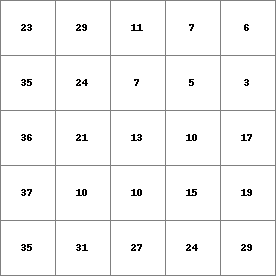
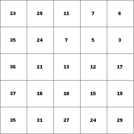
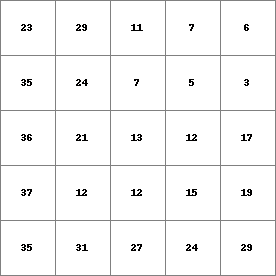

lddcreatedem
Modified digital elevation model
Result = lddcreatedem(elevation, outflowdepth, corevolume, corearea, catchmentprecipitation)
pit removing at edges of the map
--unittrue (default) or --unitcell
assignment of elevation in pits
This operation corresponds with the local drain direction maker lddcreate with the difference that a modified digital elevation model is created instead of a local drain direction map. The modified digital elevation model fits the local drain direction map generated on the basis of the original digital elevation model. ‘Not real’ cores are removed from the local drain direction map. Additionally an extra option needed for creation of the modified digital elevation model can be specified.
The expressions used for the pit removing process outflowdepth, corevolume, corearea, catchmentprecipitation and the options - -unitcell/unittrue and --lddout/--lddin have exactly the same meaning and are used in the same way as with the lddcreate operation. So, before you start making modified dem’s using lddcreatedem we advise you to read and study the description of the lddcreate command first.
First, a local drain direction map is generated internally, using elevation. This is done after the manner of the lddcreate operator, but it is not saved as an expression. Second, the original digital elevation model elevation is modified in such a way that it fits this local drain direction map. This modified digital elevation model is saved as Result. The cell values on Result correspond with the values on elevation, with the exception that the elevation of cells in cores of pit cells is changed. This is done for cores of pit cells which are removed only; the elevation in cores of pits which are not removed remains unaffected. The way elevation values in cores are changed is specified with the --lddfill and --lddcut options. Setting the option --lddfill the elevation of cells in a core is increased until the overflow level is reached. This can be compared with fluviatile or lacustrine sedimentation in the core depression until a maximum sedimentation level is reached: the level of the core pass which is at the lowest elevation. The option --lddcut does not fill the core but reduces the elevation of the cells on the path between the pit cell and the overflow cell. This can be compared with digging a canal in the core between the pit and the pass with the lowest elevation; the canal bottom is at the elevation of the pit.
A cell with missing value on one or more of the input expressions is totally ignored during operation of lddcreatedem; it is assigned a missing value on Result.
Here, a somewhat generalized description of pit removing and reversal of local drain directions is given. For a detailed description see Van Deursen, 1995.
This operation belongs to the group of Derivatives of elevation maps
| Result2.map | Dem.map |
|  |  |
| Result1.map | Dem.map |
|  |